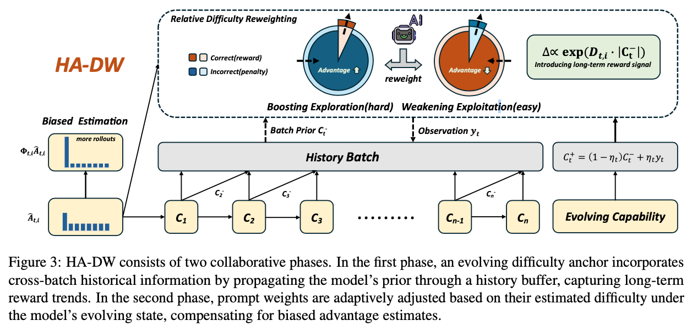
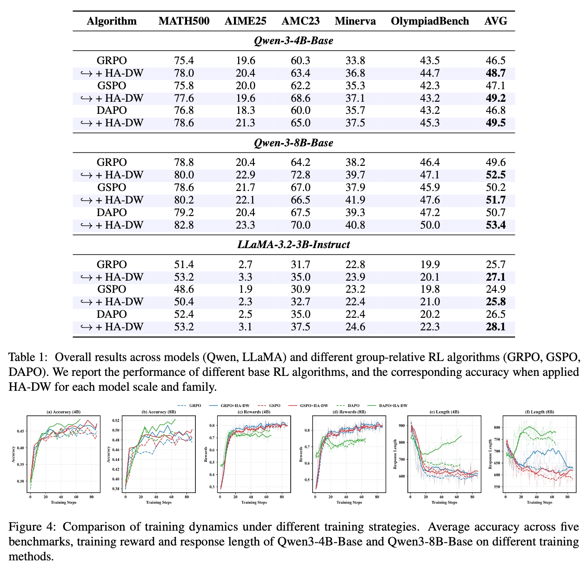
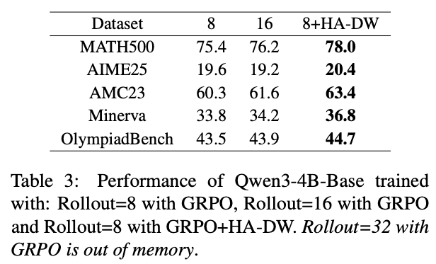
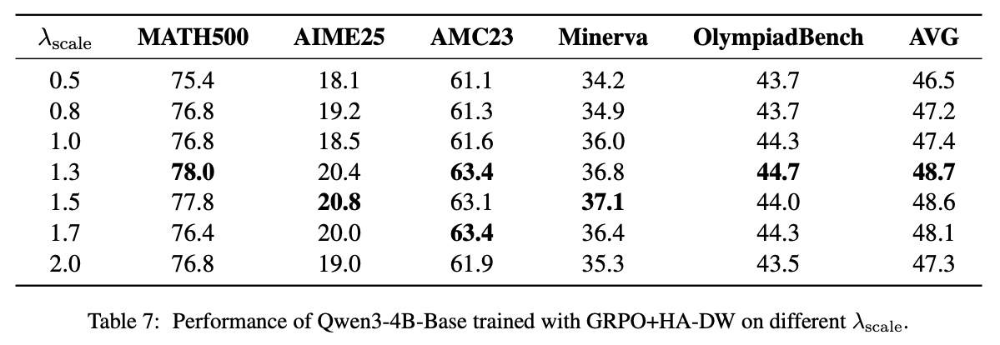
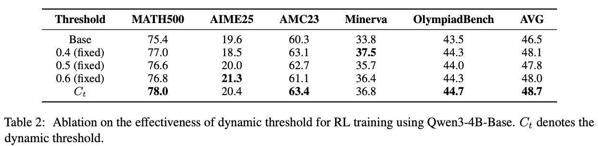

Loading markdown...
Your Group-Relative Advantage Is Biased
HA-DW: History-Aware Difficulty Weighting for Debiased Group-Relative Advantage in RLHF
1. Problem & Motivation
This paper proposes an adaptive advantage reweighting optimization algorithm (HA-DW) to mitigate bias induced by group-based advantage estimation.
Core Finding: The expectation of group-based advantage estimation $\hat{A}_{t,i}$ is underestimated for difficult prompts and overestimated for easy prompts. This means algorithms like GRPO have systematic bias during training.
Solution: Two key components: (1) Cross-batch information framework for history-aware prompt difficulty anchoring; (2) Adaptive advantage reweighting algorithm to correct bias. With appropriate $\lambda_{scale}$, HA-DW adjusted advantage estimates are closer to true advantage in expectation.
2. Theory Structure
Part I: Reveal Bias
The Problem
Prove that Group-Relative Advantage estimation is mathematically biased
Part II: Solve Bias
The Solution
Derive how to eliminate bias through correction coefficient $\lambda_{scale}$
Part III: Generalization
Extension
Prove bias exists not only in binary rewards, but also in continuous rewards
3. Dependency Graph
Theorem
Lemma
Corollary
Part I: Reveal Bias
→
Lemma
Lemma 2
Bias Quantification
↓
Theorem
Theorem 1
Bias Existence
Theorem
Theorem 2
Bias Distribution
↓
Corollary
Corollary 1
G≤8
Corollary
Corollary 2
G≥6
Corollary
Corollary 3
Sure Event
Part II: Solve Bias
→
→
Lemma
Lemma 4
Concentration
Lemma
Lemma 5
Confidence
↓
Lemma
Lemma 3
Existence
Lemma
Lemma 1/6
Baseline Range
↓
Theorem
Theorem 3 ★
Advantage Rectification
Part III: Generalization
Theorem
Theorem 4
Continuous Reward
↓
Corollary
Corollary 4
Beta Dist.
Corollary
Corollary 5
Truncated Gaussian
4. Theorems
Theorem 1
Existence of Bias
Bias Direction
Core conclusion: At expectation level — difficult samples are underestimated, easy samples are overestimated.
If $p_t < 0.5$: $\mathbb{E}[\hat{A}_{t,i}|\mathcal{S}] < A_{t,i}$
If $p_t > 0.5$: $\mathbb{E}[\hat{A}_{t,i}|\mathcal{S}] > A_{t,i}$
If $p_t > 0.5$: $\mathbb{E}[\hat{A}_{t,i}|\mathcal{S}] > A_{t,i}$
Theorem 2
Bias Probability Distribution
Probability Characterization
Quantifies the probability of deviation exceeding $\epsilon$ for both hard and easy samples.
$\mathbb{P}(A_{t,i} - \hat{A}_{t,i} > \epsilon | \mathcal{S})$ = [binomial sum formula]
Theorem 3
Advantage Rectification ★
HA-DW Foundation
Key theorem! Proves that if $\lambda_{scale}$ falls in specific interval, corrected advantage bias becomes smaller.
$|\mathbb{E}[\hat{A}_{t,i} \cdot \Phi_{t,i} | \mathcal{S}] - A_{t,i}| < |\mathbb{E}[\hat{A}_{t,i} | \mathcal{S}] - A_{t,i}|$
Key Insight
Maps baseline correction coefficient c range to algorithm hyperparameter $\lambda_{scale}$ range.
Theorem 4
Continuous Reward Bias
Generalization
Generalizes to continuous bounded reward $r_{t,i} \in [0,1]$. Proves bias is universal.
$\mathbb{E}[\hat{A}_{t,i} - A_{t,i} | \mathcal{S}_{\sigma}] = p_t - \mathbb{E}[\hat{p}_t | \mathcal{S}_{\sigma}]$
5. Lemmas
Lemma 1/6
Baseline Rectification
Core Bridge
Finds coefficient interval $(c_{low}, c_{high})$ independent of unknown $p_t$.
$c_{low} := \sup_{p \in I_t} \frac{(p-\epsilon) A(p)}{p(1-p^{G-1})}$
Lemma 2
Bias Quantification
Math Core of Thm 1
Provides exact mathematical expression for bias.
$A_{t,i} - \mathbb{E}[\hat{A}_{t,i}|\mathcal{S}] = \frac{p_t(1-p_t)^G + p_t^{G+1} - p_t^G}{1 - (1-p_t)^G - p_t^G}$
Lemma 3
Correction Existence
Existence Proof
If $p_t$ is known, there must exist a c that can correct bias.
Lemma 4
Concentration Inequality
Hoeffding-based
Provides probability upper bound for $|\hat{p}_t - p_t|$. Starting point of solution.
Lemma 5
Confidence Interval
Safety Radius
With probability $\geq 1-\delta$, bounds possible range of $p_t$ via $\hat{p}_t + \epsilon_\delta$.
6. Corollaries
Corollary 1
Bias Probability (G≤8)
Practical Warning
$\mathbb{P}(\hat{A}_{t,i} < A_{t,i} | p_t < 0.5) > \mathbf{63\%}$
$\mathbb{P}(\hat{A}_{t,i} < A_{t,i} | p_t < 0.25) > \mathbf{78\%}$
$\mathbb{P}(\hat{A}_{t,i} < A_{t,i} | p_t < 0.125) = \mathbf{100\%}$
$\mathbb{P}(\hat{A}_{t,i} < A_{t,i} | p_t < 0.25) > \mathbf{78\%}$
$\mathbb{P}(\hat{A}_{t,i} < A_{t,i} | p_t < 0.125) = \mathbf{100\%}$
Corollary 3
Sure Event
Certain Bias
Under some conditions, bias 100% certainly occurs!
$p_t < \frac{1}{G} \Rightarrow \hat{A}_{t,i} < A_{t,i}$ (certain)
$p_t > \frac{G-1}{G} \Rightarrow \hat{A}_{t,i} > A_{t,i}$ (certain)
$p_t > \frac{G-1}{G} \Rightarrow \hat{A}_{t,i} > A_{t,i}$ (certain)
Corollary 4
Beta Distribution
Theorem 4 Example
$f(x) = \frac{x^{\alpha-1}(1-x)^{\beta-1}}{B(\alpha, \beta)}$
$p_t = \frac{\alpha}{\alpha+\beta}$
$p_t = \frac{\alpha}{\alpha+\beta}$
Corollary 5
Truncated Gaussian
Theorem 4 Example
Demonstrates bias universality in continuous rewards.
7. Experiments
Training Pipeline
Overall training framework of HA-DW algorithm

Experimental Setup
Models, benchmarks and baselines
Models
- Qwen3-4B-Base
- Qwen3-8B-Base
- LLaMA-3.2-3B-Instruct
Benchmarks
- MATH500
- AIME25, AMC23
- Minerva, OlympiadBench
Baselines
- GRPO
- GSPO
- DAPO
Resources
8× NVIDIA A100 GPUs
VeRL framework
Results
Comparison with baselines


Ablation Studies
Hyperparameter analysis

